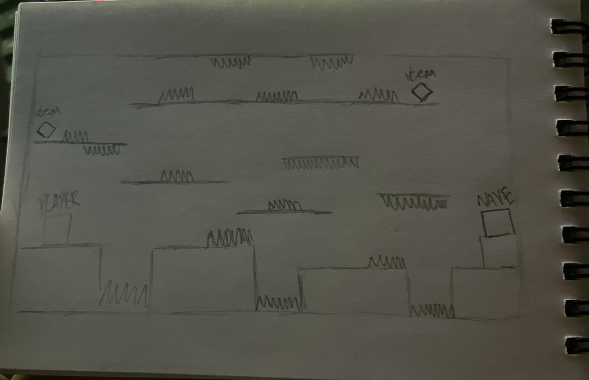
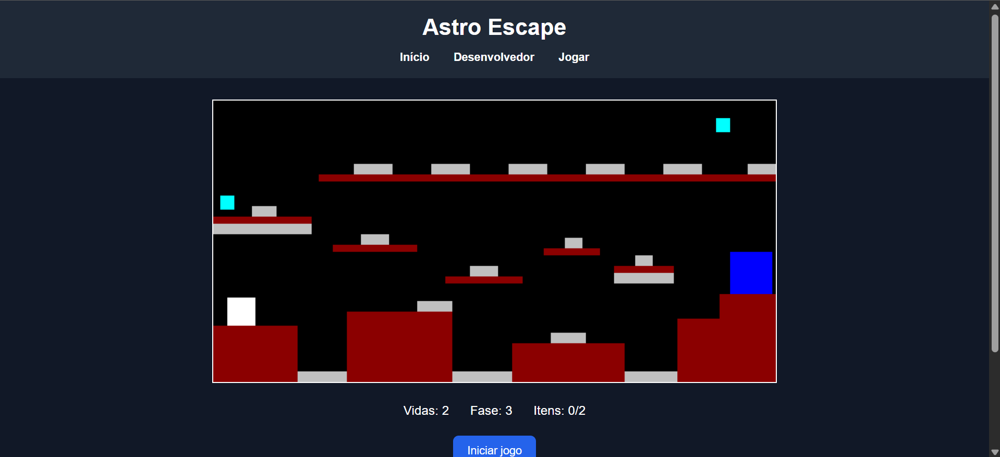
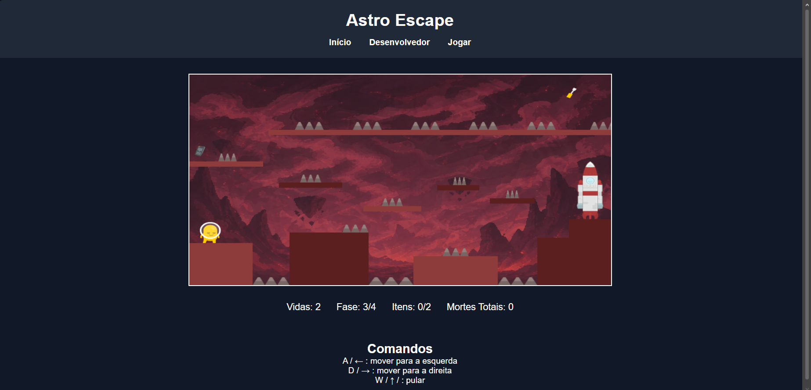

Sobre o desenvolvimento
Astro Escape foi desenvolvido como um projeto de jogo de plataforma 2D, focado em lógica de programação, mecânicas de gameplay e evolução visual.
Durante o desenvolvimento foram implementados sistemas como colisão, movimentação, patrulha de inimigos, iluminação dinâmica, sistema de vidas, menu inicial e progressão entre fases.
Cada planeta foi planejado separadamente, começando por rascunhos no papel, seguido de protótipos simples com blocos e, por fim, a construção da versão final com sprites e cenários próprios.
RA: 24.125.042-2
E-mail: bieldantas081620@gmail.com
Processo de Desenvolvimento
Cada fase do Astro Escape passou por três etapas principais: planejamento no papel, prototipação com blocos e construção visual final utilizando sprites e cenários.

Planejamento
Estrutura inicial da fase desenhada no papel para organizar plataformas, obstáculos e fluxo do jogador.

Protótipo
Teste das mecânicas utilizando apenas blocos simples para validar movimentação e dificuldade.

Versão Final
Adição de sprites, cenários, iluminação e identidade visual própria para cada planeta.
Créditos
Alguns sprites e assets visuais utilizados no projeto foram adaptados de bibliotecas gratuitas e conteúdos autorais para fins acadêmicos.
Fundos, telas: autoria própria com ajuda de Inteligência Artificial.
Sprites adicionais (planetas, astronauta, aliens, espinhos, nave, itens) e referências visuais: Kenney.nl. Todos os direitos reservados ao site.